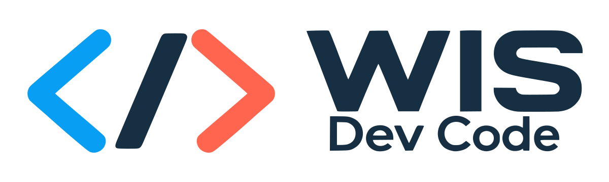
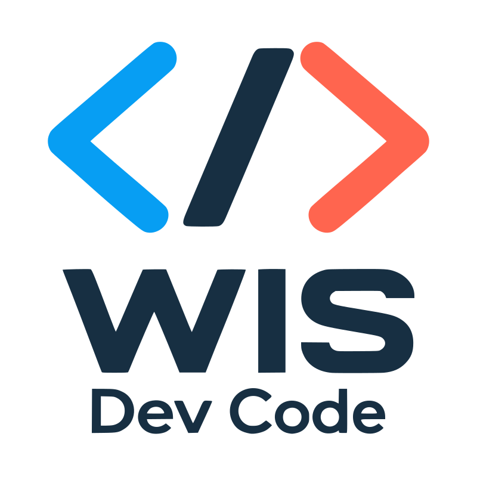
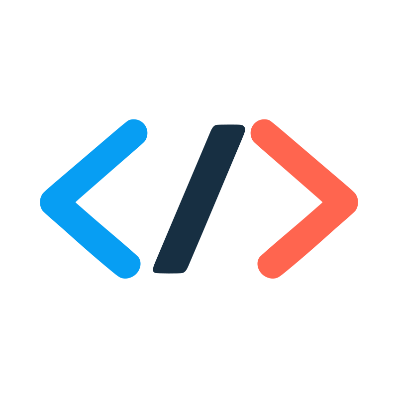
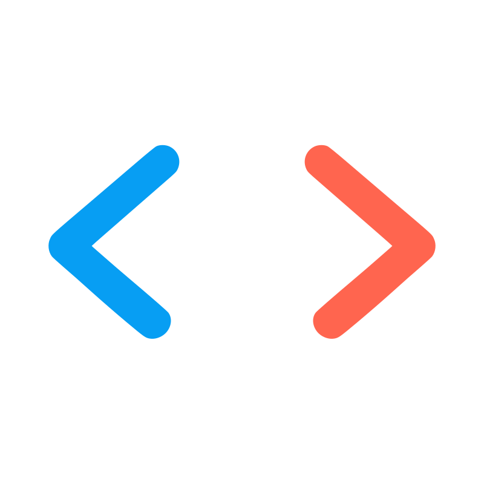

Navy
#101E2A

WIS Dev Code / Brand kit / 1.0
Logotipos, color y tipografía. Una referencia para integrar la marca en tu sitio con una presencia consistente en claro y oscuro.




Para la pestaña del navegador utiliza el favicon específico. Conserva la proporción y el espacio incluido en los archivos maestros.
Navy
#101E2AAzure
#079EF3Coral
#FF654FBlanco
#FFFFFFEn interfaces claras, el azul funcional #0068A8 permite botones con texto blanco legible. En interfaces oscuras, Azure lleva texto Navy. Los colores originales del símbolo se conservan.
Montserrat / Títulos / 600–700
Jerarquía, ritmo y claridad.
ABCDEFGHIJKLMNÑOPQRSTUVWXYZ
abcdefghijklmnñopqrstuvwxyz · 0123456789
Inter / Texto y controles / 400–600
Una estructura fácil de recorrer da espacio a cada idea. Usa párrafos breves, títulos concretos y acciones que indiquen con claridad qué sucede al seleccionarlas.
ÁÉÍÓÚ · áéíóú · ¿Cómo empezamos? · ¡Vamos!
JetBrains Mono / Código / 400 / Opcional
const brand = "WIS Dev Code";
Campo de muestra; la información no se envía ni se guarda.
Puedes probar el foco con la tecla Tab y alternar la apariencia desde la cabecera.